Biodiversidad
Catálogo de biodiversidad
Consulta fichas de flora y fauna y filtra por tipo o comarca.
Registro de fauna
Listado estático de especies con identificador, fotografía y clasificación.
| Foto | Ficha | |||||
|---|---|---|---|---|---|---|
| FAU-001 |  |
Corzo | Capreolus capreolus | Mamífero | Bosques y formaciones forestales | |
| FAU-002 | 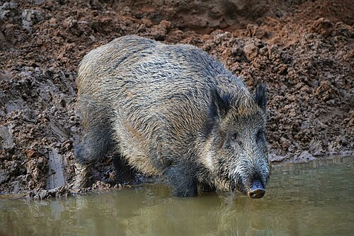 |
Jabalí | Sus scrofa | Mamífero | Bosques y formaciones forestales | |
| FAU-003 | 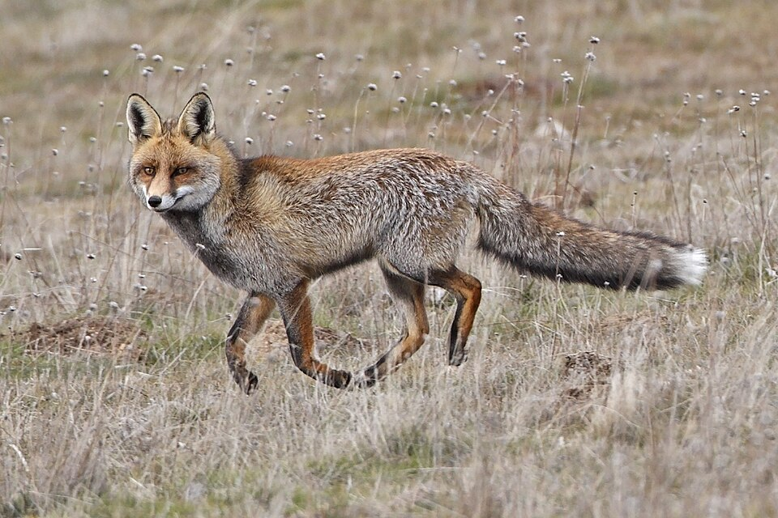 |
Zorro rojo | Vulpes vulpes | Mamífero | Campiña atlántica | |
| FAU-004 | 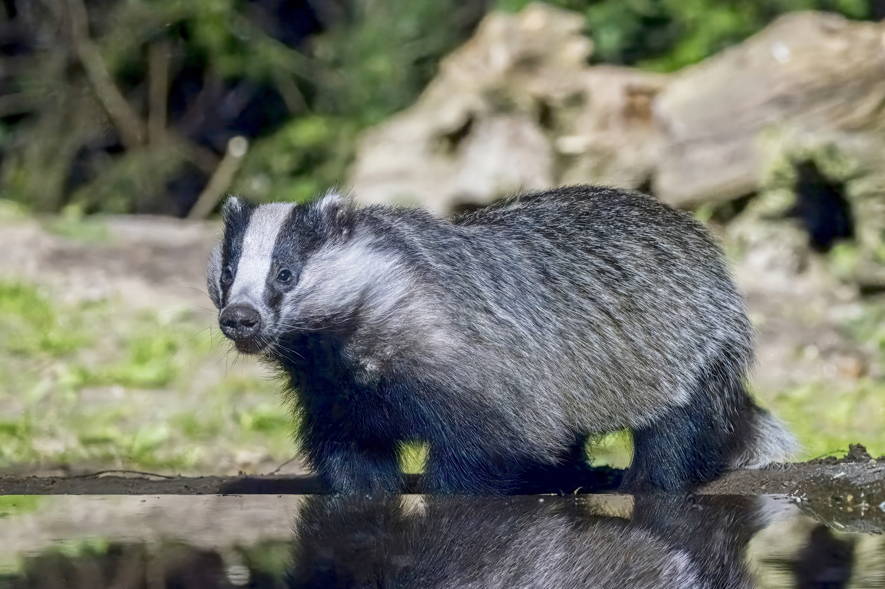 |
Tejón europeo | Meles meles | Mamífero | Bosques y formaciones forestales | |
| FAU-005 | Gato montés | Felis silvestris | Mamífero | Bosques y formaciones forestales | ||
| FAU-006 | 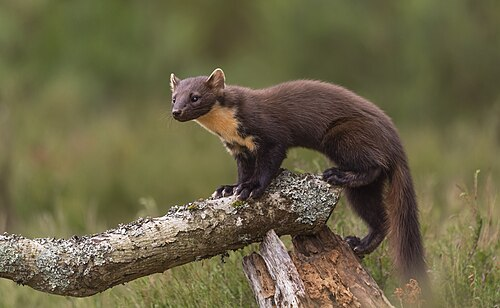 |
Marta europea | Martes martes | Mamífero | Bosques y formaciones forestales | |
| FAU-007 | 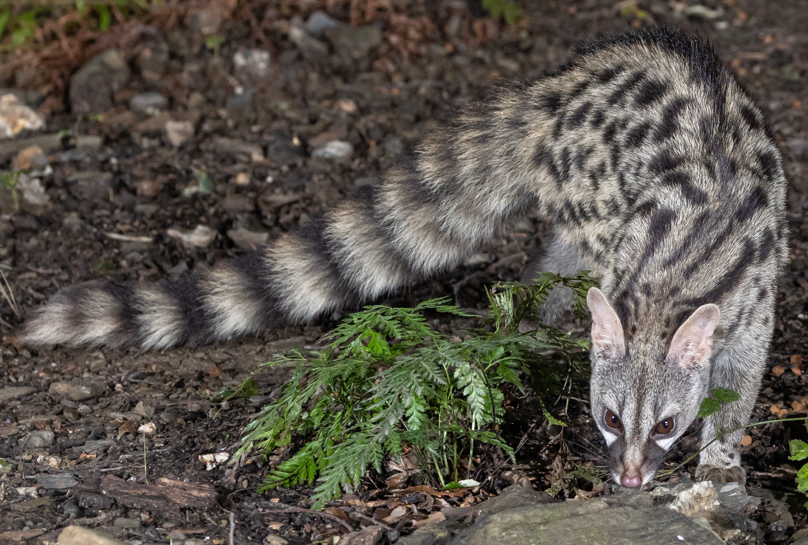 |
Gineta | Genetta genetta | Mamífero | Bosques y formaciones forestales | |
| FAU-008 | 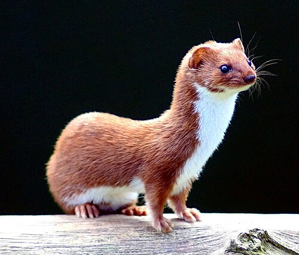 |
Comadreja común | Mustela nivalis | Mamífero | Campiña atlántica | |
| FAU-009 |  |
Visón europeo | Mustela lutreola | Mamífero | Bosques de ribera | |
| FAU-010 | 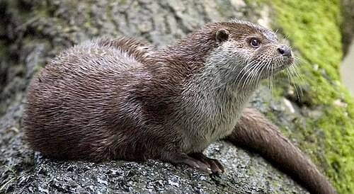 |
Nutria europea | Lutra lutra | Mamífero | Bosques de ribera | |
| FAU-011 | 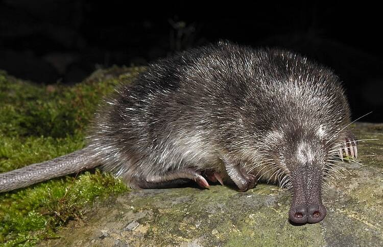 |
Desmán ibérico | Galemys pyrenaicus | Mamífero | Arroyos | |
| FAU-012 | 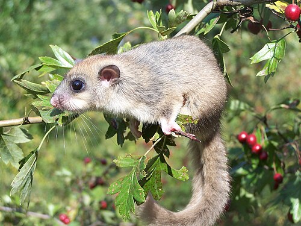 |
Lirón gris | Glis glis | Mamífero | Bosques y formaciones forestales | |
| FAU-013 | 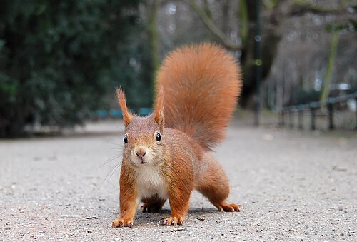 |
Ardilla roja | Sciurus vulgaris | Mamífero | Bosques y formaciones forestales | |
| FAU-014 | 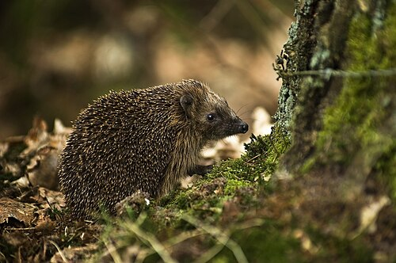 |
Erizo europeo | Erinaceus europaeus | Mamífero | Campiña atlántica | |
| FAU-015 | 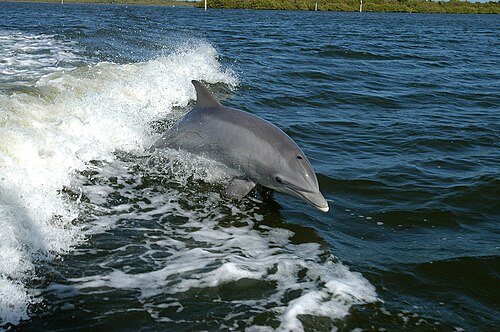 |
Delfín mular | Tursiops truncatus | Cetáceo | Mar abierto | |
| FAU-016 | 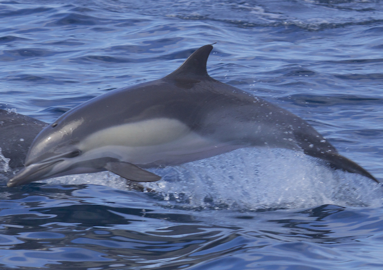 |
Delfín común | Delphinus delphis | Cetáceo | Mar abierto | |
| FAU-017 | 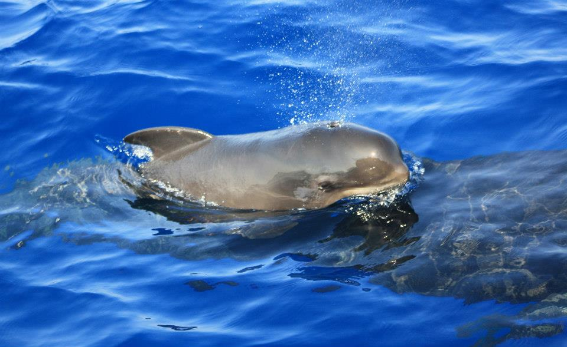 |
Calderón común | Globicephala melas | Cetáceo | Mar abierto | |
| FAU-018 | 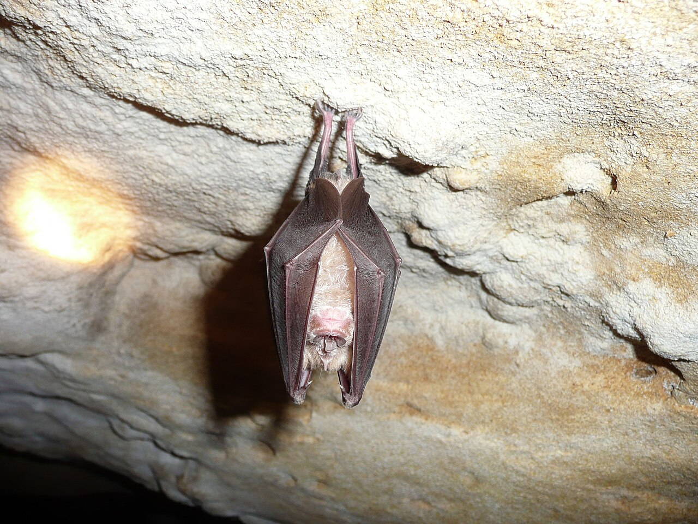 |
Murciélago grande de herradura | Rhinolophus ferrumequinum | Murciélago | Cuevas | |
| FAU-019 | 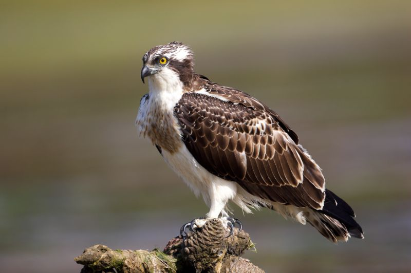 |
Águila pescadora | Pandion haliaetus | Ave rapaz | Zonas húmedas | |
| FAU-020 | 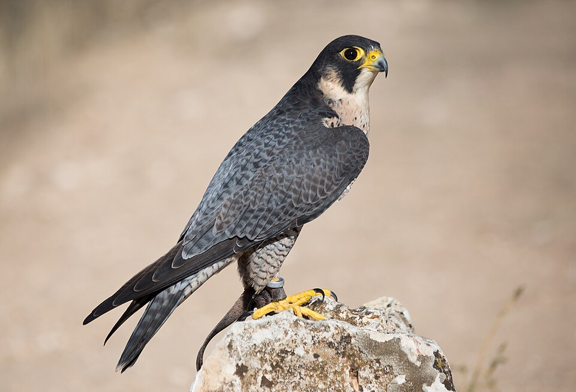 |
Halcón peregrino | Falco peregrinus | Ave rapaz | Roquedos | |
| FAU-021 | 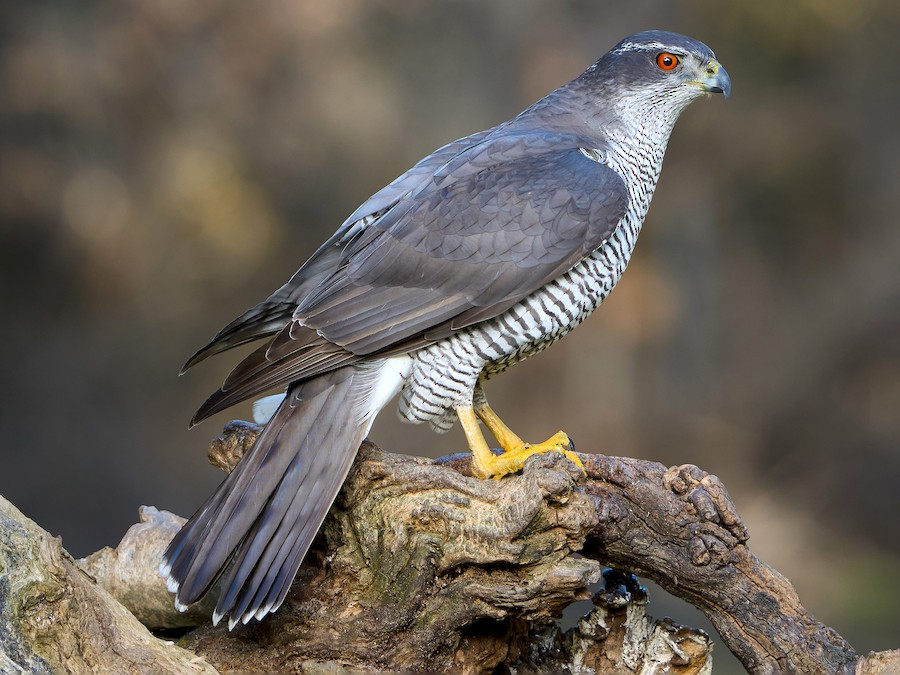 |
Azor común | Accipiter gentilis | Ave rapaz | Bosques y formaciones forestales | |
| FAU-022 | 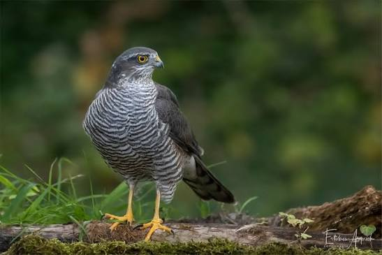 |
Gavilán común | Accipiter nisus | Ave rapaz | Bosques y formaciones forestales | |
| FAU-023 | 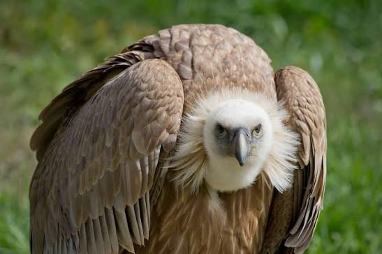 |
Buitre leonado | Gyps fulvus | Ave rapaz | Cortados calizos | |
| FAU-024 | 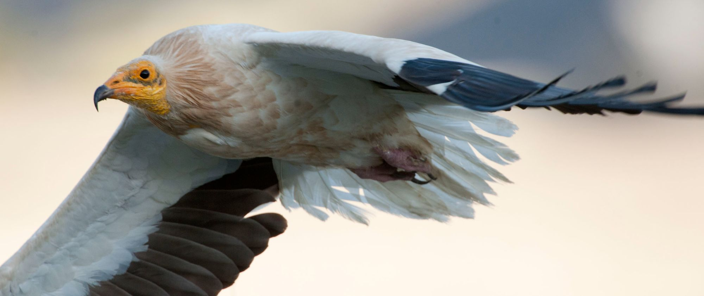 |
Alimoche común | Neophron percnopterus | Ave rapaz | Cortados calizos | |
| FAU-025 | 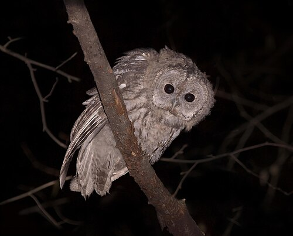 |
Cárabo común | Strix aluco | Ave rapaz | Bosques y formaciones forestales | |
| FAU-026 | 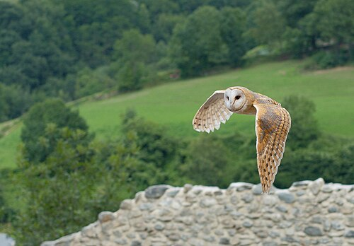 |
Lechuza común | Tyto alba | Ave rapaz | Medios humano-agropecuarios | |
| FAU-027 |  |
Cormorán moñudo | Gulosus aristotelis | Ave marina | Islotes | |
| FAU-028 | 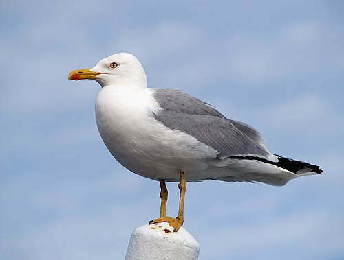 |
Gaviota patiamarilla | Larus michahellis | Ave marina | Playa | |
| FAU-029 | 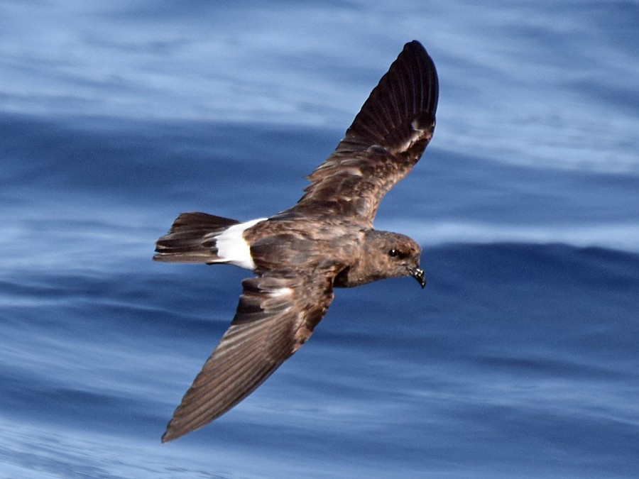 |
Paíño europeo | Hydrobates pelagicus | Ave marina | Mar abierto | |
| FAU-030 | 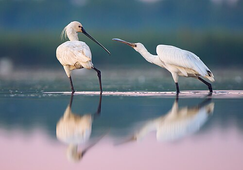 |
Espátula común | Platalea leucorodia | Ave acuática | Marismas | |
| FAU-031 | 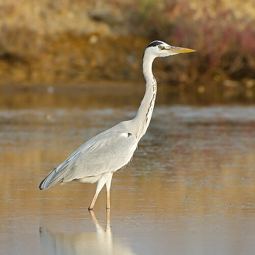 |
Garza real | Ardea cinerea | Ave acuática | Ríos | |
| FAU-032 | Zarapito trinador | Numenius phaeopus | Ave limícola | Litorales | ||
| FAU-033 |  |
Aguja colinegra | Limosa limosa | Ave limícola | Marismas | |
| FAU-034 | 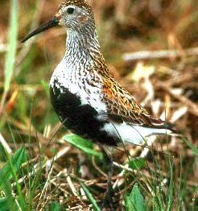 |
Correlimos común | Calidris alpina | Ave limícola | Playa | |
| FAU-035 | 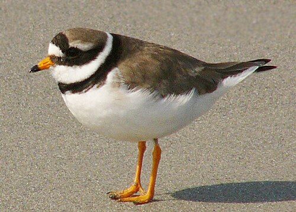 |
Chorlitejo grande | Charadrius hiaticula | Ave limícola | Playa | |
| FAU-036 | 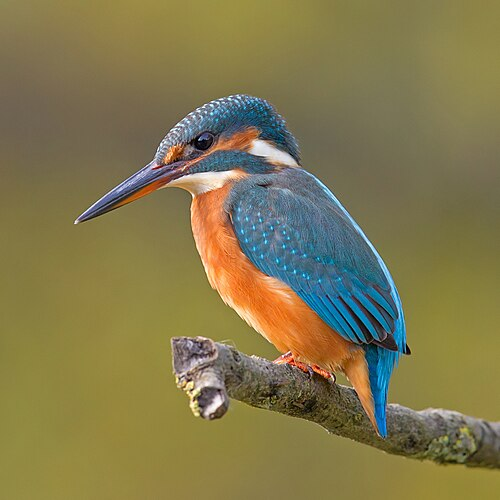 |
Martín pescador | Alcedo atthis | Ave fluvial | Ríos | |
| FAU-037 | 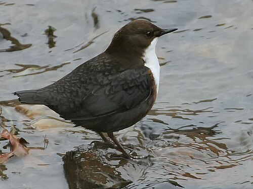 |
Mirlo acuático | Cinclus cinclus | Ave fluvial | Ríos | |
| FAU-038 | 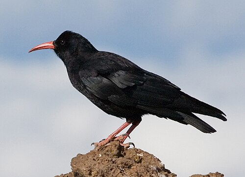 |
Chova piquirroja | Pyrrhocorax pyrrhocorax | Ave de roquedo | Cortados calizos | |
| FAU-039 | 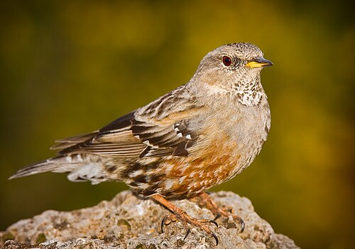 |
Acentor alpino | Prunella collaris | Ave de montaña | Zonas de cumbre | |
| FAU-040 | 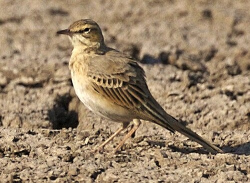 |
Bisbita campestre | Anthus campestris | Ave paseriforme | Pastizales | |
| FAU-041 | 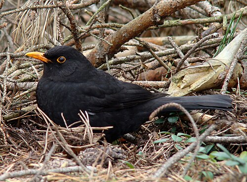 |
Mirlo común | Turdus merula | Ave paseriforme | Campiña atlántica | |
| FAU-042 | 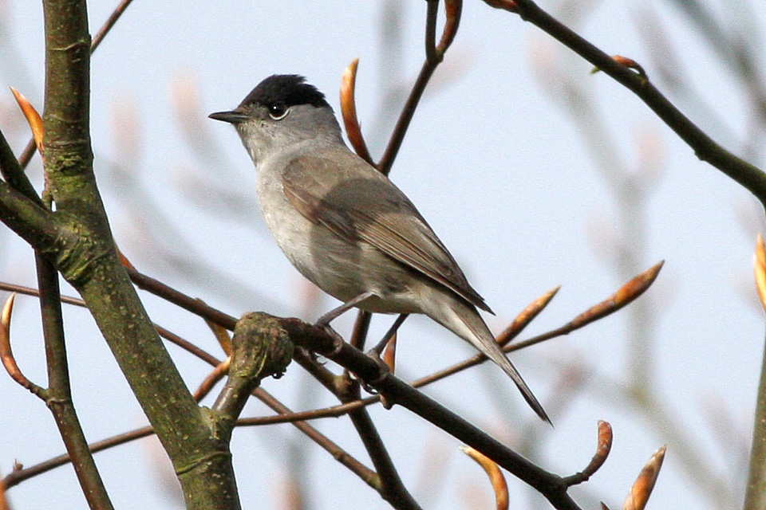 |
Curruca capirotada | Sylvia atricapilla | Ave paseriforme | Bosques y formaciones forestales |
Registro de flora
Listado de especies vegetales del proyecto. Las fotografías se incorporarán cuando estén preparadas.
| ID | Fotografía | Nombre común | Nombre científico | Hábitat principal |
|---|---|---|---|---|
| FLR-001 | Foto pendiente | Haya | Fagus sylvatica | Bosques y formaciones forestales |
| FLR-002 | Foto pendiente | Roble albar / Carballo | Quercus robur | Bosques y formaciones forestales |
| FLR-003 | Foto pendiente | Roble sésil | Quercus petraea | Bosques y formaciones forestales |
| FLR-004 | Foto pendiente | Castaño | Castanea sativa | Bosques y formaciones forestales |
| FLR-005 | Foto pendiente | Avellano | Corylus avellana | Bosques y formaciones forestales |
| FLR-006 | Foto pendiente | Arce campestre | Acer campestre | Bosques y formaciones forestales |
| FLR-007 | Foto pendiente | Aliso común | Alnus glutinosa | Bosques de ribera |
| FLR-008 | Foto pendiente | Chopo negro | Populus nigra | Bosques de ribera |
| FLR-009 | Foto pendiente | Fresno de hoja ancha | Fraxinus excelsior | Bosques de ribera |
| FLR-010 | Foto pendiente | Sauce blanco | Salix alba | Bosques de ribera |
| FLR-011 | Foto pendiente | Encina cantábrica | Quercus ilex subsp. ilex | Bosques y formaciones forestales |
| FLR-012 | Foto pendiente | Madroño | Arbutus unedo | Bosques y formaciones forestales |
| FLR-013 | Foto pendiente | Aladierno | Rhamnus alaternus | Bosques y formaciones forestales |
| FLR-014 | Foto pendiente | Lentisco | Pistacia lentiscus | Bosques y formaciones forestales |
| FLR-015 | Foto pendiente | Zarzaparrilla | Smilax aspera | Bosques y formaciones forestales |
| FLR-016 | Foto pendiente | Pino insigne / Pino de Monterrey | Pinus radiata | Bosques y formaciones forestales |
| FLR-017 | Foto pendiente | Eucalipto blanco | Eucalyptus globulus | Bosques y formaciones forestales |
| FLR-018 | Foto pendiente | Hinojo de mar | Crithmum maritimum | Litorales |
| FLR-019 | Foto pendiente | Armeria marina | Armeria maritima | Litorales |
| FLR-020 | Foto pendiente | Llantén marino | Plantago maritima | Litorales |
| FLR-021 | Foto pendiente | Barrón / Paja de duna | Ammophila arenaria | Dunas |
| FLR-022 | Foto pendiente | Correhuela de las dunas | Calystegia soldanella | Dunas |
| FLR-023 | Foto pendiente | Oruga de mar | Cakile maritima | Playa |
| FLR-024 | Foto pendiente | Lechetrezna de playa | Euphorbia paralias | Playa |
| FLR-025 | Foto pendiente | Carrizo | Phragmites australis | Zonas húmedas |
| FLR-026 | Foto pendiente | Junco marino | Juncus maritimus | Marismas |
| FLR-027 | Foto pendiente | Salicornia / Hierba salada | Sarcocornia fruticosa | Marismas |
| FLR-028 | Foto pendiente | Hierba de las marismas | Zostera noltii / Zostera marina | Marismas |
| FLR-029 | Foto pendiente | Helecho real / Helecho florido | Osmunda regalis | Zonas húmedas |
| FLR-030 | Foto pendiente | Atrapamoscas / Rocío del sol | Drosera rotundifolia | Zonas húmedas |
| FLR-031 | Foto pendiente | Brezina / Brezo común | Calluna vulgaris | Matorrales de montaña |
| FLR-032 | Foto pendiente | Brezo blanco | Erica vagans | Matorrales de montaña |
| FLR-033 | Foto pendiente | Brezo de ciénaga / Brezo húmedo | Erica tetralix | Zonas húmedas |
| FLR-034 | Foto pendiente | Tojo / Argoma | Ulex europaeus | Matorrales de montaña |
| FLR-035 | Foto pendiente | Enebro rastrero | Juniperus communis subsp. alpina | Matorrales de montaña |
| FLR-036 | Foto pendiente | Arándano | Vaccinium myrtillus | Matorrales de montaña |
| FLR-037 | Foto pendiente | Helecho común | Pteridium aquilinum | Bosques y formaciones forestales |
| FLR-038 | Foto pendiente | Saxífraga cantábrica | Saxifraga babiana | Roquedos |
| FLR-039 | Foto pendiente | Té de roca / Lengua de ciervo | Asplenium scolopendrium | Cuevas |
| FLR-040 | Foto pendiente | Clemátide / Vidarra | Clematis vitalba | Bosques y formaciones forestales |
| FLR-041 | Foto pendiente | Pulsatilla cantábrica | Pulsatilla alpina subsp. cantabrica | Zonas de cumbre |
| FLR-042 | Foto pendiente | Helecho de cueva | Culcita macrocarpa | Cuevas |
| FLR-043 | Foto pendiente | Majuelo / Espino blanco | Crataegus monogyna | Campiña atlántica |
| FLR-044 | Foto pendiente | Trébol blanco | Trifolium repens | Campiña atlántica |
| FLR-045 | Foto pendiente | Diente de león | Taraxacum officinale | Campiña atlántica |
| FLR-046 | Foto pendiente | Ortiga mayor | Urtica dioica | Campiña atlántica |
| FLR-047 | Foto pendiente | Gamón / Varita de San José | Asphodelus albus | Pastizales |
47 especies vegetales